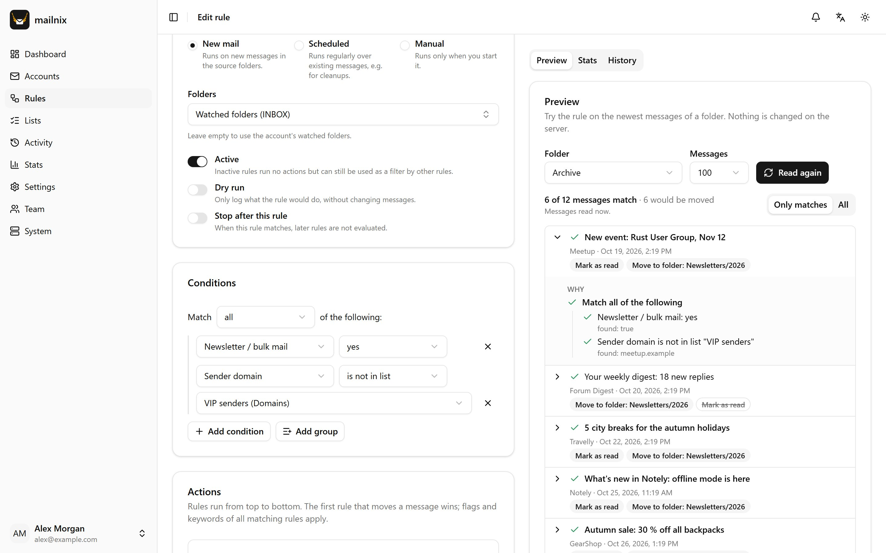
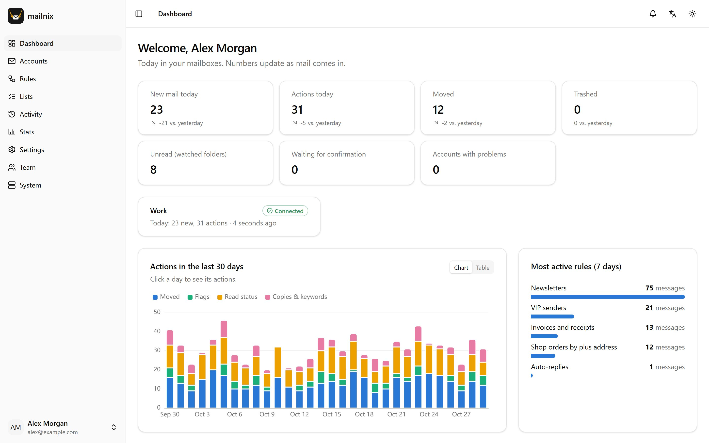
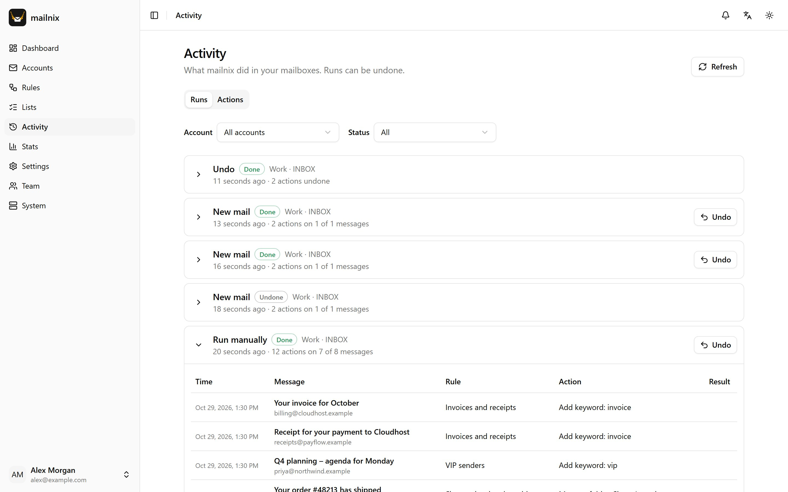

Rules you build, not code
Conditions on sender, subject, headers, attachments, mailing lists or sender checks, in all/any/none groups. Folder templates like Archive/{year} or Shops/{plusTag} create folders as needed.
mailnix watches your IMAP, Gmail and Microsoft 365 mailboxes and moves, flags and files incoming mail by rules you build in the browser – with a preview that explains every match before anything changes.
Free and open source under the MIT license. Runs on your computer or your own server.

Everything a mail filter on the server should do – built so you always know what it did, and why.
Conditions on sender, subject, headers, attachments, mailing lists or sender checks, in all/any/none groups. Folder templates like Archive/{year} or Shops/{plusTag} create folders as needed.
The preview runs a rule on real messages and explains every match, condition by condition. Nothing changes on the server until you switch the rule on.
mailnix never deletes for good: “delete” means Trash. Every action is logged and can be undone, large runs wait for your confirmation, and dry runs only write down what they would do.
IMAP IDLE picks up new mail within seconds. Scheduled rules tidy up older mail, with the search done on the mail server.
A dashboard and stats show what each rule does, your top senders, newsletters and failed sender checks. The activity log lists every move.
A built-in MCP server lets Claude and other assistants read your rules and draft new ones. Drafts stay switched off until you turn them on.
See at a glance what your rules did today and over the last month – and take back anything with one click.


No cloud service in between: mailnix talks to your mail server directly and keeps its data with you.
Installs for your user, lives in the tray and opens in your browser. Updates arrive by themselves.
One program for Windows or Linux with a built-in database. Or Docker, with PostgreSQL if you like.
Several users and organizations, two-factor sign-in, and separate web and worker processes for larger setups.
The desktop app is the quickest start on Windows. The server packages run on Windows and Linux without installation.